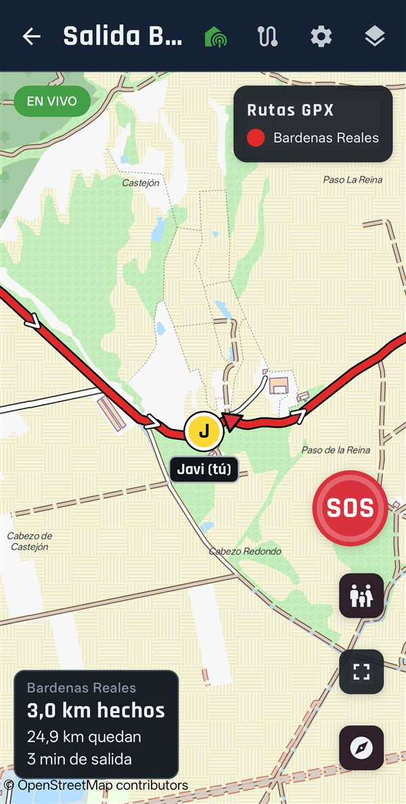

Todo el grupo ve la ruta GPX del día y dónde va cada uno en tiempo real, también sin cobertura gracias a los mapas offline de España y Andorra. Si alguien se queda atrás o se cae, el grupo se entera.
Para Android. Pronto en Google Play. Sin cuenta ni registro.

No es un navegador de carretera: es para que el grupo vaya junto por pistas y caminos, con la ruta de todos a la vista.
Quien organiza carga los GPX de cada día o etapa y a todo el grupo le llegan solos. Te avisa si te sales de la ruta y te dice los km hechos y los que quedan.
Cada uno ve a los demás sobre el mapa, con su nombre y hace cuánto llegó su posición. Funciona con el móvil bloqueado.
Mapa de España y Andorra descargado en el móvil, con pistas y senderos, para cuando no hay cobertura.
Mantén pulsado el botón y todo el grupo recibe una alarma con tu posición, aunque tengan el móvil en el bolsillo o en No molestar. Siempre gratis.
El móvil vibra si alguien va varios km por detrás en la ruta o lleva un rato parado mientras los demás seguís.
El organizador marca dónde esperarse; todos reciben un aviso cuando llega el primero y cuando ya estáis todos.
Los avisos suenan en voz alta, también por el intercomunicador del casco.
Tras un golpe fuerte con la moto en el suelo, pregunta si estás bien y, si no respondes en un minuto, avisa al grupo con tu posición.
Convierte lo recorrido en una ruta de vuelta para todo el grupo, si una pista no tiene salida.
Un enlace temporal para que en casa vean por dónde vas, sin instalar nada.
Cada salida queda guardada con sus km y su recorrido, para exportarla a GPX o compartirla con el grupo como ruta.
Sin cuenta. Las posiciones y las rutas viajan cifradas con el código del grupo: el servidor no puede leerlas.
Todo lo necesario para salir en grupo es gratis, y el S.O.S. lo será siempre. Durante el lanzamiento, todos tenéis Premium gratis hasta el 1 de marzo de 2027.
| Función | Gratis | Premium |
|---|---|---|
| Unirse a grupos, rutas y seguimiento en vivo | Sí | Sí |
| Mapas offline, aviso de salida de ruta y km | Sí | Sí |
| S.O.S. | Siempre | Sí |
| Grupos que administras | 1 | Ilimitados |
| Rezagado, reagrupamiento, voz, caídas y volver | No | Sí |
| Satélite y compartir con la familia | No | Sí |
| Mis salidas | Las 3 últimas | Todas, con exportar a GPX |
Antes de publicarla, Google pide que un grupo de personas la pruebe desde Google Play durante 14 días. Si sales en moto y quieres probarla antes que nadie, escríbeme con el correo de tu cuenta de Google (Gmail): te llegará la invitación y tendrás Premium.